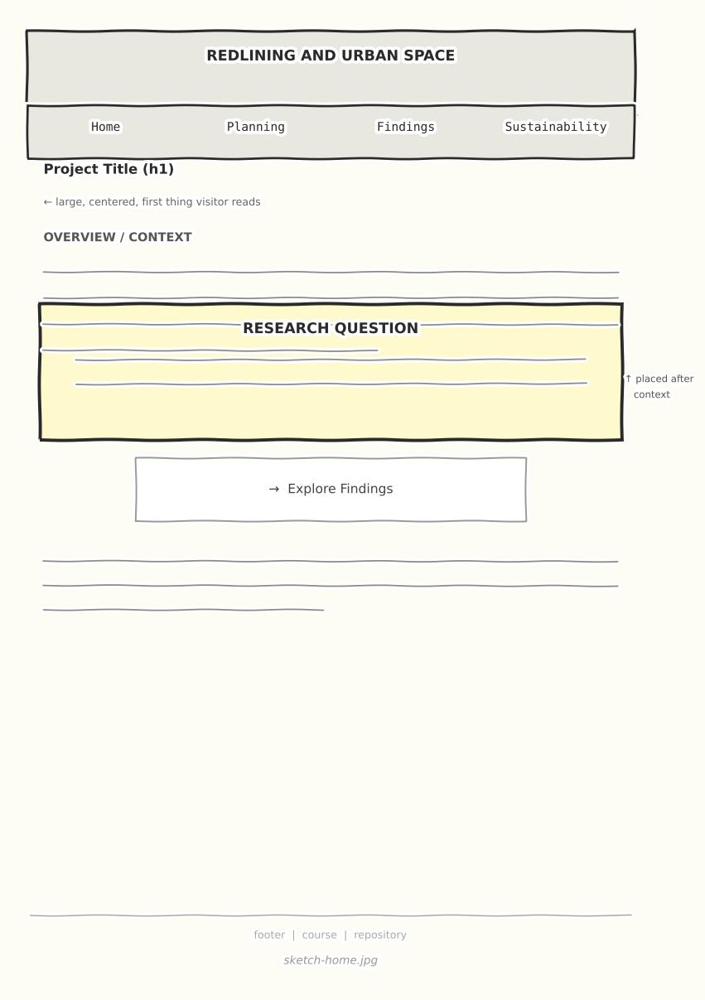
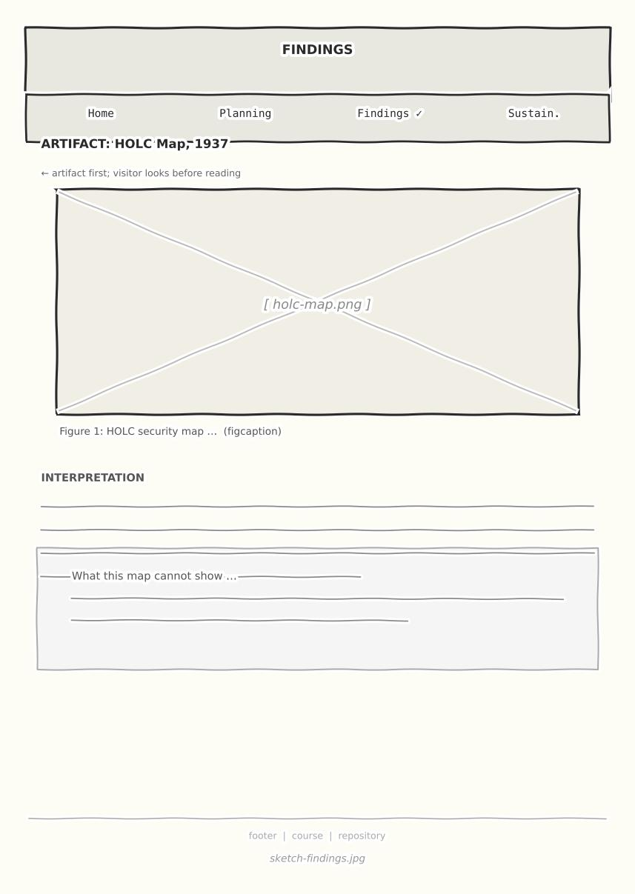
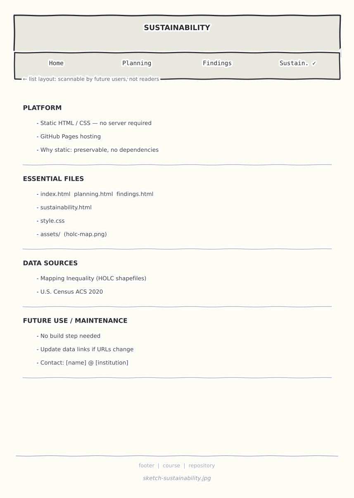

Interface Sketches
Before building any pages, I drew schematic sketches of each page on paper. The sketches are shown below. The goal was to decide, for each page, two things: what the page should reveal to a visitor, and what it should guide them to do. Those two questions shaped the layout before any code was written.



Design Decisions
Home Page
Reveals: what the project is, what question it asks, and why that question matters.
Guides visitors toward: reading the overview and then navigating to findings. The research question is placed after the overview, not before it, so that a visitor encounters the context before the formal question.
Change from sketch to built page: The sketch had a shorter overview. After drafting the text, I split the overview into two paragraphs — one on the historical subject, one on the methods — to make the scope of the project clearer early.
Findings Page
Reveals: the central artifact — a map of HOLC boundaries overlaid with a present-day indicator — and an interpretation of what it shows.
Guides visitors toward: reading the image carefully before encountering the interpretive text. The caption names what the map shows; the paragraph below argues what it means.
Change from sketch to built page: The sketch showed only one artifact. The built page adds a brief note on limitations directly below the interpretation, which felt necessary once the actual map was in place.
Sustainability Page
Reveals: how the site was built, what files are essential, and what a future user or researcher would need to maintain or extend it.
Guides visitors toward: treating this as documentation, not a conclusion. It is written for a future reader with a practical purpose, not for the current reader seeking an argument.